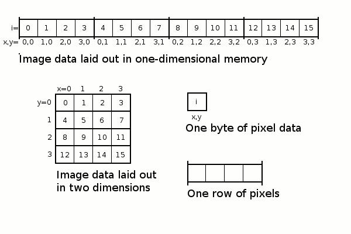
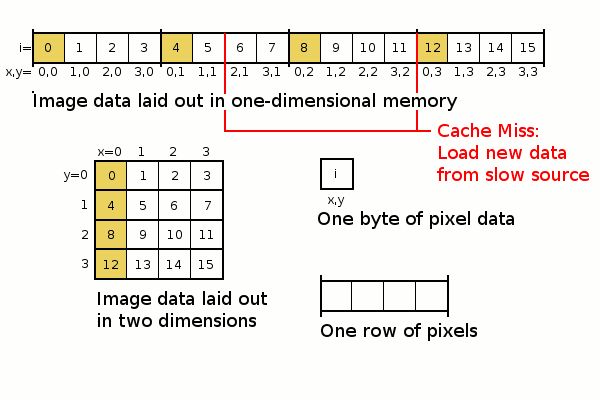
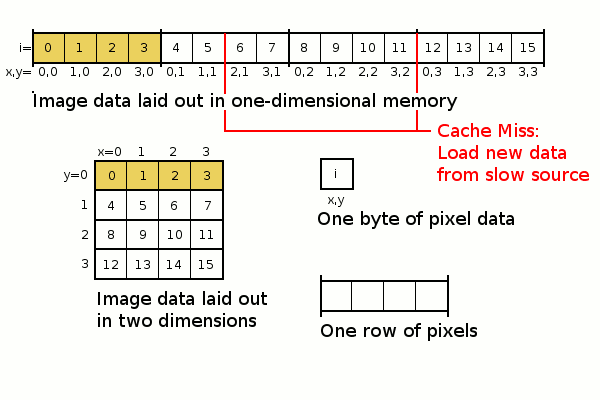

Part 1: Vectorized Computation using Numpy¶
We have just learned about the logical set-up of a computer and which factors affect the performance of it. Keeping this in mind, we will learn how we can improve the performance of our code in Python.
1. Vectorization in Python¶
{kind=link}
{kind=link}
Simple Example: Calculate the sum of two arrays¶
[1]:
import numpy as np
[2]:
nvals = 1000
values1 = np.arange(0, nvals)
values2 = np.arange(0, nvals)
… using an explicit for loop¶
[3]:
def loop_sum(values1, values2):
result = []
for v1, v2 in zip(values1, values2):
result.append(v1 + v2)
return result
[4]:
%%timeit
res = loop_sum(values1, values2)
243 µs ± 7.74 µs per loop (mean ± std. dev. of 7 runs, 1000 loops each)
… using a numpy universal function¶
[5]:
import numpy as np
[6]:
%%timeit
np.add(values1, values2)
938 ns ± 13.6 ns per loop (mean ± std. dev. of 7 runs, 1000000 loops each)
What about np.vectorize?¶
There is a numpy.vectorize() functions which seems like it vectorizes your Python code. But beware, always read the small print in the docs: “The vectorize function is provided primarily for convenience, not for performance. The implementation is essentially a for loop.” numpy doc
[7]:
def add_values(a, b):
"Return a-b if a>b, otherwise return a+b"
return a + b
[8]:
add_values_vect = np.vectorize(add_values)
[9]:
%%timeit
add_values_vect(values1, values2)
215 µs ± 37 µs per loop (mean ± std. dev. of 7 runs, 1000 loops each)
Vectorizing your script using Numpy¶
Avoid for loops (or even nested for loops) when possible.
Perform calculations on arrays rather than scalars
Use Numpy’s built-in universal functions whenever possible to enable vectorized computation.
2. Numpy Warm-Up Exercises¶
Let’s do some numpy warm up exercises.
E 2.1: Create a vector with values ranging from 10 to 49
[ ]:
E 2.2: Calculate the square root of each element of the array above.
[ ]:
E 2.3: Create a null vector of size 10 but the fifth value which is 1.
[ ]:
E 2.4: Create a random vector of size 30 and find the minimum and maximum value.
Bonus: How can you make the function always yield the same result?
[ ]:
E 5.5: Create a 3x3 matrix with values ranging from 0 to 8.
[ ]:
E 2.6: Create a 5x10 array (rows x cols) with random values and find the mean value of each row.
[ ]:
E 2.7: The numpy array b is given. Predict the output of print(b[0, 0], b[0, 1], b[1, 0]) before executing it?
[10]:
b = np.array([[1, 2, 3], [4, 5, 6]])
E 2.8: Predict the shape of the resulting array when you compute the mean of c along the axis=0, axis=1 and axis=2.
[11]:
c = np.arange(0,3*4*5).reshape(3,4,5)
[ ]:
When you’re done, choose three more exercises which suite your level from Nicolas Rougier’s 100 Numpy Exercises.¶
E 2.9: Paste your chosen exercise here
[ ]:
E 2.10: Paste your chosen exercise here
[ ]:
E 2.11: Paste your chosen exercise here
[ ]:
3. Spatial Locality¶
A puzzling problem¶
Example: Let’s create an 2 dimensional array with random numbers with 10000 rows and 10000 columns. Then we calculate the mean along the rows and along the columns. We will measure the computation time of each cell using the magic command %%timeit. What do you observe? Can you explain the result?
[12]:
import numpy as np
[13]:
arr_big = np.random.random(100000000).reshape(10000, 10000)
[14]:
%%timeit
np.mean(arr_big, axis=0)
100 ms ± 3.52 ms per loop (mean ± std. dev. of 7 runs, 10 loops each)
[15]:
%%timeit
np.mean(arr_big, axis=1)
55.3 ms ± 213 µs per loop (mean ± std. dev. of 7 runs, 10 loops each)
Looking at the way arrays are stored in pyhsical memory might help us explain this phenomenon.¶
  
Source: Spatial locality explained
Row and Column Major Order¶
By default numpy arrays are stored in C order (row-major), not in F order (column-major). Therefore, calculations along the rows (axis=1) are faster than along the columns (axis=0) for a 2D array. So calculating the mean of each row is faster than the mean of each column if the numpy array is stored as default in C order.
{kind=link}
[16]:
arr2D = np.arange(0, 50).reshape(10, 5, order="F")
A multi-dimensional array can be converted to a 1D array using the function ravel() with the option to specify C or F order.
[17]:
arr2D.ravel(order="C")
[17]:
array([ 0, 10, 20, 30, 40, 1, 11, 21, 31, 41, 2, 12, 22, 32, 42, 3, 13,
23, 33, 43, 4, 14, 24, 34, 44, 5, 15, 25, 35, 45, 6, 16, 26, 36,
46, 7, 17, 27, 37, 47, 8, 18, 28, 38, 48, 9, 19, 29, 39, 49])
[18]:
arr2D.ravel(order="F")
[18]:
array([ 0, 1, 2, 3, 4, 5, 6, 7, 8, 9, 10, 11, 12, 13, 14, 15, 16,
17, 18, 19, 20, 21, 22, 23, 24, 25, 26, 27, 28, 29, 30, 31, 32, 33,
34, 35, 36, 37, 38, 39, 40, 41, 42, 43, 44, 45, 46, 47, 48, 49])
Numpy Strides¶
“Strides are the number of bytes to jump-over in the memory in order to get from one item to the next item along each direction/dimension of the array. In other words, it’s the byte-separation between consecutive items for each dimension.” Stack Overflow
[19]:
x = np.array([[1, 2, 3],
[4, 5, 6],
[7, 8, 9]], dtype=np.int16, order="C")
[20]:
x.strides
[20]:
(6, 2)
To get to the next row you need to jump 3 * 2 byte (16 bit integer = 2 byte). To get to the next column you need to jump 1 * 2 byte.
E: How do the strides change when you change the data type to 64 bit float?
[ ]:
E: What happens to the data in memory when you transpose an array?
[21]:
arr = np.arange(5*10, dtype="float64").reshape(10, 5)
[22]:
arr.strides
[22]:
(40, 8)
[23]:
arr.transpose().strides
[23]:
(8, 40)
Answer:
[ ]:
Exercise:¶
Create an F ordered array with 15 columns and 10 rows with data type 32bit float. Calculate the strides by yourself. Check your result by executing the strides.
[ ]:
Lists and spatial locality¶
Arrays are better than lists for continous reading of data, because lists usually only store pointers to variables stored in memory, not the variable values themselves. This can lead to bad spatial locality when reading the data, because the data might be spread all over the memory.

[ ]:
Summary¶
You should be able now to explain the sentence “vectorized is better than an explicit loop”.
When performing calculations it is good to keep in mind how arrays are stored in memory, since it can influence your processing time.
Most of the time however, NumPy or Python take care of it.
Resources:¶
Micha Gorelick, Ian Ozsvald. High Performance Python. O’Reilly, 2014. (Safari Books) (very good)
Schmidt, B., Gonzalez-Dominguez, J., Hundt, C., & Schlarb, M. (2017). Parallel programming: concepts and practice. Morgan Kaufmann. Google Books
SciPy Lecture Notes: Advanced Numpy
Real Python: Numpy array programming
[ ]: